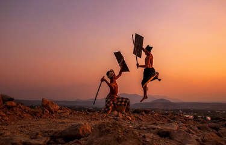
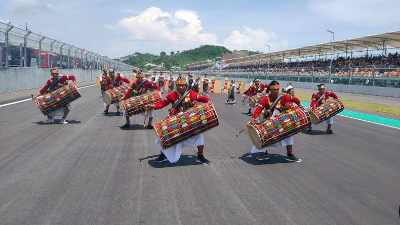

Lombok adalah sebuah pulau indah di Nusa Tenggara Barat yang semakin dikenal sebagai destinasi wisata kelas dunia. Dengan keindahan pantai,
gunung, dan budaya yang masih terjaga, Lombok menawarkan pengalaman yang berbeda dari destinasi lain di Indonesia. Suasana pulau yang lebih tenang,
alam yang masih alami, serta masyarakat lokal yang ramah menjadikan Lombok tempat ideal untuk berlibur dan mengenal budaya Nusantara lebih dalam.
wisata
Foto oleh Ketut Mardita, Wikimedia Commons — lisensi CC BY-SA 4.0.
Gunung Rinjani adalah salah satu gunung paling megah di Indonesia dan menjadi ikon kebanggaan masyarakat Nusa Tenggara Barat.
Berdiri setinggi 3.726 meter di atas permukaan laut, Rinjani merupakan gunung berapi tertinggi kedua di Indonesia dan menjadi destinasi utama bagi para pendaki dari seluruh dunia.
Keindahan panorama, udara segar, serta tantangan medan pendakian menjadikan Rinjani sebagai tempat yang tak pernah sepi dari kunjungan pecinta alam.
budaya
Lombok tidak hanya terkenal dengan pantai dan Gunung Rinjani, tetapi juga karena kekayaan budayanya yang unik. Sebagai rumah bagi suku Sasak yang merupakan mayoritas penduduknya, Lombok memiliki tradisi, seni, dan nilai-nilai kehidupan yang masih sangat terjaga hingga kini.
Budaya Lombok bukan sekadar warisan, tetapi juga identitas yang terus diwariskan dari generasi ke generasi.
Berikut adalah beberapa aspek penting dalam budaya Lombok yang mencerminkan keindahan dan kekhasan masyarakat Sasak.
peresean

Foto oleh ketut mardita, Wikimedia Commons — lisensi CC BY-SA 4.0
Peresean adalah tradisi bela diri khas suku Sasak di Lombok yang menampilkan adu ketangkasan dua lelaki dengan menggunakan penjalin (rotan) sebagai senjata dan ende (perisai kulit kerbau) sebagai pelindung.
Tradisi ini telah diwariskan secara turun-temurun dan menjadi simbol keberanian, sportivitas, serta kehormatan bagi masyarakat Sasak.
Meski terlihat keras, Peresean merupakan pertunjukan budaya yang sarat nilai filosofi dan aturan adat.
gendang beleq

Foto: inews ntb
Gendang Beleq adalah salah satu kesenian tradisional paling terkenal dari suku Sasak di Lombok. Nama “Gendang Beleq” berasal dari kata gendang yang berarti alat musik perkusi, dan beleq yang berarti besar.
Sesuai namanya, gendang ini memiliki ukuran jumbo yang dimainkan secara berkelompok dalam sebuah atraksi musik dan tari yang penuh energi.
Kesenian ini bukan hanya sebuah hiburan, tetapi juga simbol keberanian, semangat juang, serta kebanggaan budaya suku Sasak.